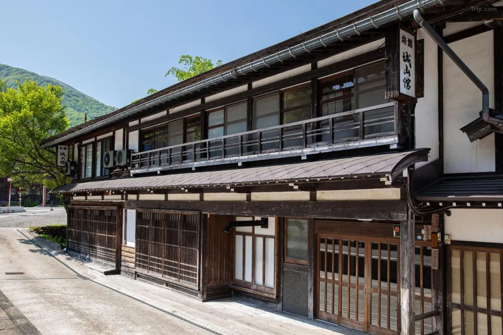
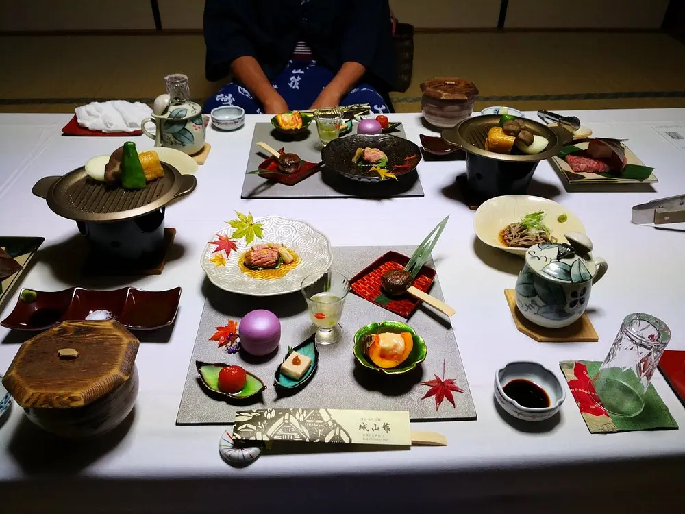
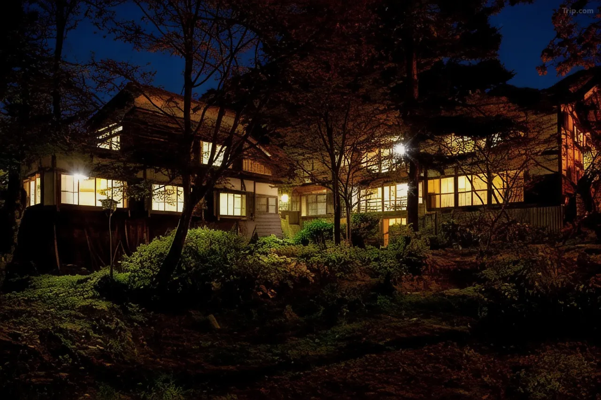
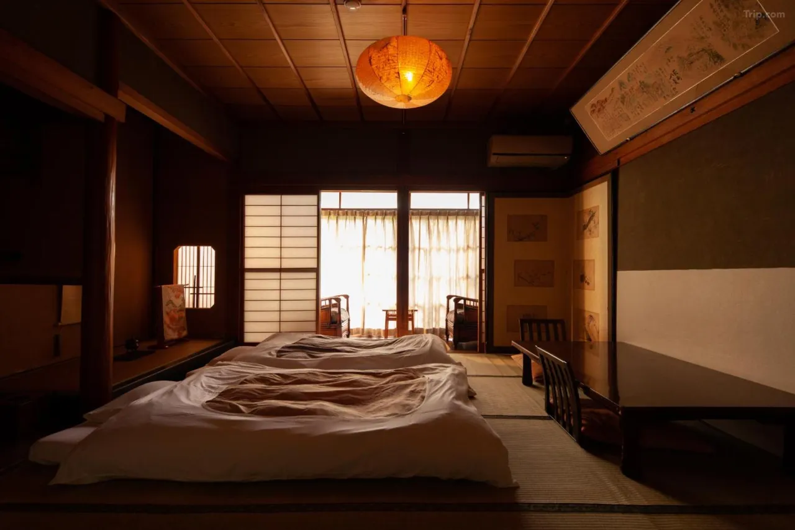
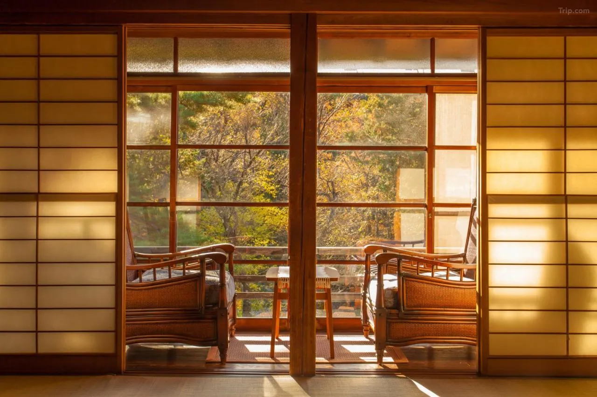
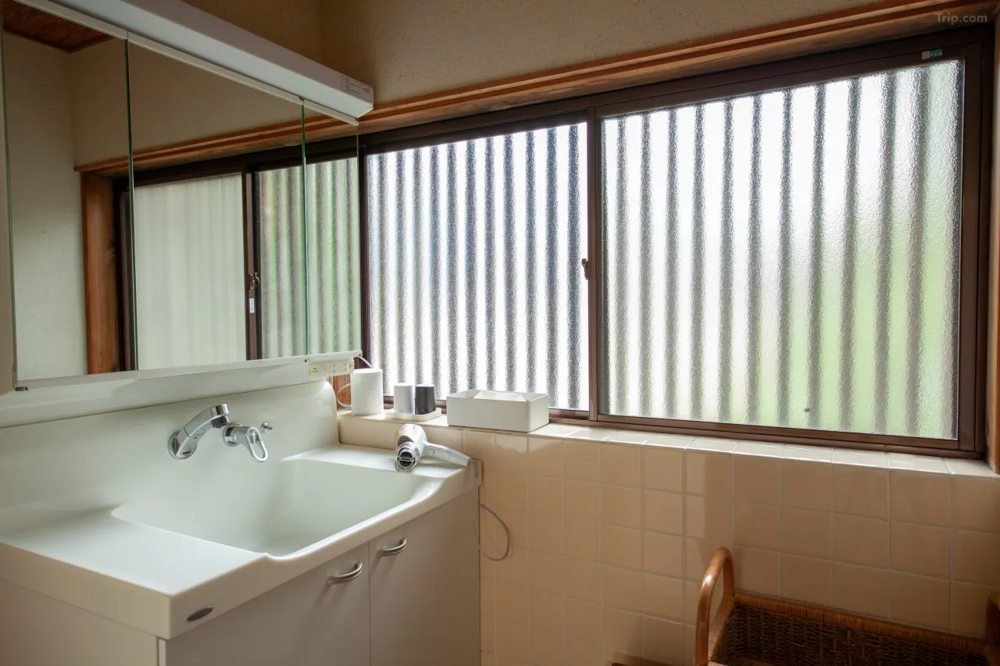
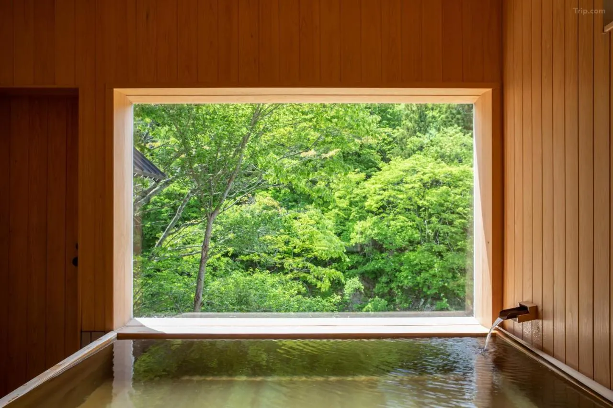
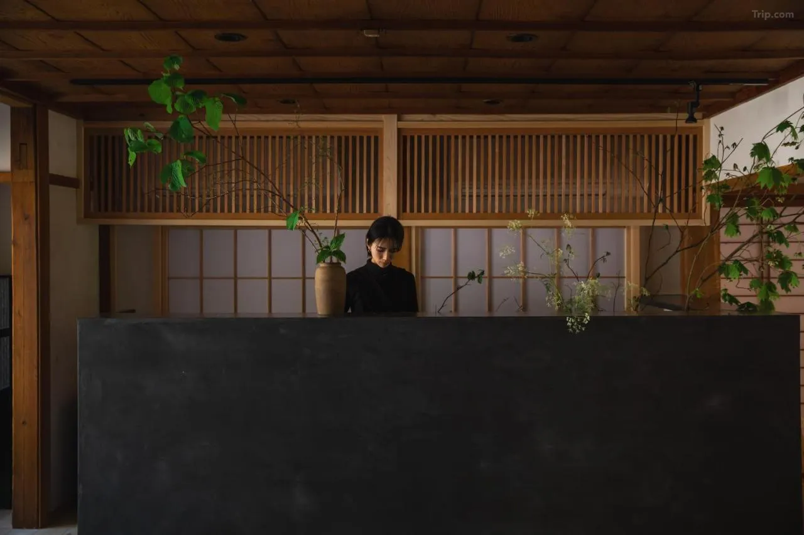

Shirakawa-go is the real-world village that Higurashi When They Cry rebuilt into Hinamizawa. The gassho-zukuri farmhouses with their steep thatched roofs, the Shōgawa River running alongside the village, the suspension bridge at the entrance, the Shirakawa Hachiman Shrine at the south of Ogimachi — all of it appears in the anime, recreated with the faithfulness of an artist who spent time here and carried the memory home. When Keiichi Maehara crosses into Hinamizawa for the first time, he is crossing into a village that exists, that UNESCO designated a World Heritage Site in 1995, and that receives thousands of anime pilgrims every year alongside the crowds who come simply for the gassho architecture and the mountains.
Shiroyamakan was built in 1884. It is the oldest ryokan still operating inside the Ogimachi district. It accepts four parties per night. The owner's family has run it for four generations. Nothing about it is designed to accommodate mass tourism, and that restraint is the entire point.
The Building: 140 Years Inside a World Heritage Site
Shiroyamakan's exterior has stood for over 140 years and is now designated as an Important Traditional Building — one of the preserved structures that gives Shirakawa-go its protected status as a Historic Village. The building represents the ryokan architecture of the late Meiji, Taisho, and early Showa eras: the proportions, the materials, the relationship between the structure and the Shōgawa River flowing beside it. What the exterior preserves, the renovated interior transforms.

The April 2023 renovation kept every stone and beam of the exterior while converting the interior into what the family describes as a space combining old-fashioned Japanese warmth with simple Japanese modernism. The four rooms divide into two configurations: two traditional tatami rooms facing the garden, and two Western-style twin rooms with private toilets and washbasins that were converted from tatami rooms in the renovation. The Western-style rooms have large picture windows — one overlooking a koi pond, one facing the Shō River — and heated floors for winter guests. None of the rooms have televisions. The design principle is deliberate: without screens, the window becomes the entertainment. Guests who have stayed here consistently report spending hours watching the river, the changing light on the mountains, the autumn leaves or the snow.
The Baths and the Evening: Hinoki, Kaiseki, and the 4 PM Tour
There are two baths at Shiroyamakan, each built from Kiso cypress (hinoki) and filled with natural spring water. Both can be reserved for exclusive private use by room — guests flip the occupied sign and have the bath to themselves. One faces the river; the other faces the garden. The hinoki itself is worth noting: cypress wood releases compounds into warm water and steam that have a distinctive calming quality, and bathing in a well-maintained hinoki tub is an experience meaningfully different from a standard onsen.
Dinner is kaiseki, served at 6 PM in a dining room with views of the surrounding nature. The family forages, farms, and sources their ingredients locally — mountain vegetables, river fish, wild game in season — and the result, consistently described in reviews as exceptional, reflects both the seasonal specificity of Shirakawa-go and the knowledge of four generations who have cooked in this valley. Natural wines, local sake, and craft beer are offered as pairings. Breakfast at 7:45 AM continues in the same spirit: traditional dishes built around the same local sourcing, served before the day-tripper buses begin arriving and the village fills with visitors.

At 4 PM daily, the fourth-generation owner of Shiroyamakan takes his overnight guests on a complimentary driving tour of the village — up to the Shiroyama Observatory Deck for the panoramic view that appears in the Higurashi opening sequence, along the village roads, through the history of Ogimachi and its people. Guest reviews mention this tour more than almost any other detail. It converts a stay in a historic building into an encounter with a place through the perspective of someone who grew up inside it.
Hinamizawa: The Anime Pilgrimage
Higurashi When They Cry (ひぐらしのなく頃に) is a horror and mystery franchise that began as a doujin sound novel before generating multiple anime adaptations, manga, and live-action films. Its fictional setting, Hinamizawa — a remote mountain village threatened by a dam project, haunted by curses, and gradually unraveling through a series of summer tragedies — draws directly from Shirakawa-go's geography, architecture, and history. The real dam project that flooded four villages near Shirakawa-go in the construction of Miboro Dam, displacing entire communities and submerging centuries of buildings, provided the emotional and historical context for the Hinamizawa Dam Conflict that drives the story. Two ancient cherry trees recovered from submerged shrines now stand in Shirakawa-go, and locals say each blossom in spring carries a memory of the villages underneath the water.
The locations fans recognize from the anime are all accessible on foot from Shiroyamakan. Shirakawa Hachiman Shrine — the Furude Shrine of the series, site of the Watanagashi Festival — is in the south of Ogimachi and still decorated with Higurashi ema: votive wooden plaques on which pilgrims draw the characters and write their wishes. The suspension bridge at the Deaibashi appears in the anime almost unchanged. The Shiroyama Observatory viewpoint produces the rooftop panorama seen in the opening sequence. The school building, the village paths, the gassho farmhouses themselves — the anime traced each one carefully, and the faithfulness of that recreation is what makes walking through Shirakawa-go feel, for fans of the series, like stepping into something both real and impossible.
Staying overnight at Shiroyamakan means experiencing the village after the buses leave and before they return. In the early evening, after the day visitors depart and the valley quiets, Shirakawa-go becomes the place the anime was actually depicting: small, still, mountain-enclosed, and carrying that particular quality of remoteness that makes you understand, viscerally, how a village could develop its own logic entirely separate from the outside world.
Practical Information
- Check-in: 3:00 PM Check-out: 10:00 AM
- Rooms: 4 total — 2 traditional tatami + 2 twin Western-style (private toilet/washbasin)
- Capacity: Maximum 4 parties per night — book well in advance
- Baths: 2 private hinoki (Kiso cypress) baths — natural spring water — reserve per room
- Dinner: Kaiseki — 6:00 PM — foraged seasonal ingredients — sake/wine pairings
- Breakfast: Traditional Japanese — 7:45 AM
- 4 PM Tour: Complimentary village driving tour with the owner (4th generation)
- No televisions — designed for nature immersion
- Address: Ogimachi 1168-1, Shirakawa-mura, Ono-gun, Gifu 501-5627
- Access: 1 min walk from Shirakawa-go Bus Terminal · Bus from Kanazawa ~1 hr · Takayama ~50 min
- Anime connection: Higurashi When They Cry — Shirakawa Hachiman Shrine (Furude Shrine) · Deaibashi Bridge · Observatory viewpoint
| Full Name | Shiroyamakan (白山館) |
| Address | Ogimachi 1168-1, Shirakawa-mura, Ono-gun, Gifu 501-5627 |
| Built | 1884 — Important Traditional Building designation — Renovated April 2023 |
| Rooms | 4 total — 2 Japanese tatami · 2 Western twin — maximum 4 parties/night |
| Baths | 2 private hinoki cypress baths — natural spring water |
| Meals | Kaiseki dinner 6 PM · Traditional breakfast 7:45 AM — local foraged ingredients |
| Access | 1 min from Shirakawa-go Bus Terminal · Bus from Kanazawa ~60 min · Takayama ~50 min |
| Anime | Higurashi When They Cry — model for Hinamizawa village |
Photo Gallery

Photo 1
Photo 2
Photo 3'">
Photo 4'">
Photo 5'">
Photo 6'">Four Rooms. One Night. The Real Hinamizawa.
Book Shiroyamakan early — only four parties per night, and it fills quickly.